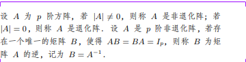

1. 判断题
1-1
- 相关系数为0表明两个变量之间不存在任何关系 ❌
相关系数为0表示两个变量间不存在线性相关
1-2
- 密度函数可以是负的 ❌
密度函数的一个性质就是非负性
1-3
- 当总体G1和G2为正态总体且协方差相等时，选用马氏距离。✅
1-4
- 标准化随机变量的协方差阵与原变量的相关系数相同。✅
1-5
- 样本相关系数r∈(－1,1) ❌
-1≤r≤1
1-6
- 密度函数可以是负的。❌
密度函数的一个性质就是非负性
1-7
- 如果相关系数为0，则表明两个变量间不存在线性相关。✅
1-8
- 一个行列式中某一行（列）所有元素的公因子可以提到行列式符号的外边。✅
1-9
numpy中产生全1的矩阵使用的方法是empty。❌
empty 方法用来创建未初始化的数组
zeros 方法用来创建全0数组
ones 方法用来创建全1数组
1-10
- 相关关系是指变量间不确定性的依存关系。✅
1-11
- pandas中head(n)的意思是获取最后的n行数据。❌
获取的是前面的n行数据
1-12
- Numpy的ndarray(数组)中，使用shape()来表示数组的维度尺寸。✅
1-13
- Python语言是非开源的语言。❌
Python是开源的
* 1-14
- 脸谱图是用脸部特征表达变量间的相关性。❌
1-15
- 通过对多变量的脸谱图分析，可以直观地对原始数据资料进行归类或比较研究 ✅
1-16
- 设要分析的资料共有p个变量，当p值较大时一张雷达图也可以清晰表达各观测之间的接近程度。❌
当观测数比较多时，画到一张雷达图里面就不太容易看出各观测之间的接近程度
1-17
- 雷达图是目前应用较为广泛的多元资料进行作图的方法，利用雷达图可以很方便地研究个样本点之间的关系并对样品进行归类。 ✅
1-18
- 星图和星座图很相似，甚至有的文献把两者看成是一回事。❌
离谱
1-19
- 利用星座图可以方便地对样本点进行分类，再星座图上比较靠近的样本点比较相似，可分为一类。✅
1-20
- 多变量的图表示法使资料的呈现方式更直观、更形象，可以作为定量分析的研究结果并形成结论。❌
个人觉得定量分析是错误的
1-21
- 只要变量的指标数目不变，对应脸谱图的特征就不变。❌
只要….就
1-22
- 马氏距离在协差阵为单位阵时退化为欧氏距离。✅
1-23
- 马氏距离受单位的影响。❌
马氏距离的优点：它不受量纲的影响，两点之间的马氏距离与原始数据的测量单位无关
马氏距离的缺点：它的缺点是夸大了变化微小的变量的作用
1-24
- 相关系数度量了两个随机变量之间依赖关系的强弱 ✅
1-25
- Cov(X,Y)=0, 称X与Y是不相关的 ✅
1-26
- 随机向量X的协方差阵是对称矩阵 ✅
* 1-27
- 若p维随机向量X的协方差阵存在,且每个分量的方差大于零，则X的相关阵的元素计算公式为:r_ij=(cov(X_i,X_j))/(D(X_i)D(X_j)),i,j=1,2,…,p。❌
1-28
- 设两个随机向量X和Y是相互独立的，F(x,y)为(X,Y)的联合分布函数，G(x)和H(y)分别为X和Y的分布函数，则F(x,y)=G(x)H(y)✅
1-29
设两个随机向量X和Y是相互独立的，f(x,y)为(X,Y)的密度函数，g(x)和h(y)分别为X和Y的密度函数，则f(x,y)=g(x)+h(y)。❌
肯定是乘呀
1-30
正态分布的条件分布仍为条件分布 ✅
1-31
相关关系数不会取负值 ❌
1-32
相关系数的绝对值不会大于1✅
1-33
若A是退化矩阵，则A-1一定存在❌

1-34
若A为p阶对称矩阵，则存在正交矩阵T和对角矩阵Λ=diag(λ_1,λ_2,⋯λ_p)，使得A=TΛT’。✅
1-35
若向量x和y的内积为0，则说明向量x和y垂直 ✅
1-36
若A是一个正交矩阵，则A的行列式为1❌
设A’为A的转置矩阵，因为A为正交矩阵，则有A’A=I，
得 |A’A|=|I|=1，即|A’||A|=|A|^2=1
所以 |A|=+-1
1-37
若A和B均为p阶方阵，则|AB|=|A||B|✅
选择题
2-1
关于 Python 语言的特点，以下选项中描述错误的是 A
A. Python 语言是非开源语言 B.Python 语言是跨平台语言
C. Python 语言是多模型语言 D.Python 语言是脚本语言
2-2
使用pandas时需要导入下面哪个？